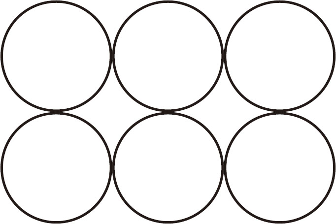
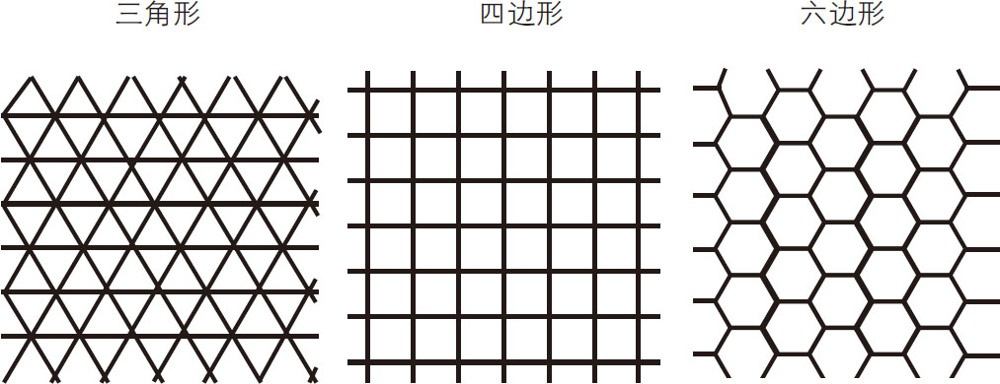
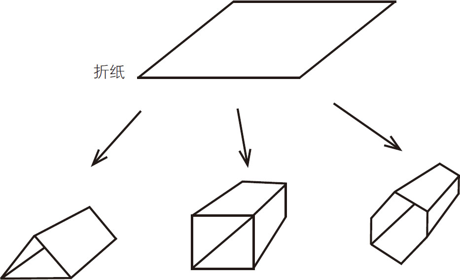
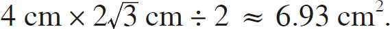
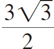
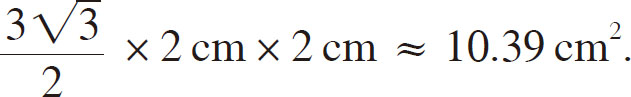

天地万物有着各种各样的形状——蜂巢是六边形的，蜗牛的壳上有美丽的螺旋状纹路，斑马身上有黑白相间的条纹，雪花的花瓣上有复杂且规则的循环图案，等等。为什么自然界中会有这么多不同的形状呢？以蜂巢为例，为什么蜜蜂一定要将它筑造成六边形的呢？我们平时看到的房子不都是四边形的吗？
其实，这里面隐藏着蜜蜂的“经济学”智慧。蜜蜂的房子是用来储存蜂蜜或养育幼虫的。无论出于哪种目的，蜂巢一定是越宽敞越好。蜂巢越宽敞，能储存的蜂蜜越多，也越利于小蜜蜂的成长。
但是，对于蜜蜂来说，筑巢是一个非常消耗体力的活儿。众所周知，蜂巢是由蜂蜡一点一点堆积而成的。而蜂蜡则是以工蜂食用的蜂蜜为原料，在工蜂体内酝酿后，以蜡质的形式从工蜂腹部分泌出来的。工蜂用脚将蜂蜡一点点铺开，制成蜂巢的巢壁。每10克蜂蜡大约需要80克蜂蜜。
我们先来了解一下蜜蜂的生活。采蜜是工蜂的职责，每只蜂王手下有数万只工蜂，工蜂是雌蜂。蜂巢中还有蜂王和数百只雄蜂，它们都要依靠工蜂所采的蜜来维持生存，而蜂王和雄蜂只负责繁殖后代。
工蜂的寿命一般为1个月左右。一只工蜂一生中能采集的蜂蜜仅为4～6克。也就是说，工蜂为蜂王奉献了自己的一生，而它们用一生的时间采集的蜂蜜最多只能制成不足1克的蜂蜡。
工蜂日复一日地在空中飞舞，辛勤地采集花蜜。它们没有周末也没有休息日，每天从早忙到晚。虽然每只工蜂能采集的蜂蜜少得可怜，但是它们有着庞大的数量，所以仍可以维持整个蜂巢的运转。
对于蜜蜂来说，蜂蜜是它们生存的必需品，和金钱对于人类的意义是一样的。相对于蜜蜂付出的辛劳，它们得到的回报实在是太少了。蜂蜜是蜜蜂的食物，把食物比作金钱似乎不妥，但对于日本人来说，直到江户时代，他们仍然将大米作为货币来使用。
如今，用于体现国民经济水平的指标是GDP（国民生产总值），而在江户时代，则是以大米——农民（劳动者）及武士（军事力量）的口粮的生产量来衡量一个藩的经济水平的。例如，某藩今年“加贺100万石”（此1石大米相当于现在的150千克大米），表示这个藩今年大米产量为15万吨。那时的农民将大米作为佃租，也就是所谓的年贡，交给大名。江户时代初期有“四公六民”一说，意思是农民有义务将四成收成上缴给公家，换作现代说法就是要上缴40%的税。这一制度在江户时代中期变成了“五公五民”，即农民要上缴五成的收成。
正如江户时代的经济水平靠大米来衡量，蜜蜂的经济活动是靠蜂蜜完成的。蜂蜜既是蜜蜂的食物，也是筑造蜂巢的原料，所以对于蜜蜂来说，蜂蜜更显得弥足珍贵了，一丁点都不能浪费。所以蜜蜂在筑造蜂巢的时候必须考虑以下两个问题：
1．空间尽可能大；
2．节约成本。
人们在租房子的时候，都会在有限的预算内，尽可能找面积大的房子。蜜蜂也是这样，在筑巢的时候力求用最低的成本达到最大的舒适度。如果蜜蜂来找你商量蜂巢的形状，那么你会推荐什么形状呢？接下来，让我们将各种形状的蜂巢比对一下，再找到最优的形状。首先，试一下圆形的，如图1-1所示。

图1-1 圆形蜂巢平面效果
从上图可以看出，如果蜂巢是圆形的，不管怎样排列，都会存在大量的空隙。虽然对于周长相等的图形来说，圆形的面积最大，但是将蜂巢筑造成圆形的同时也产生了大量的空隙，这样做会浪费很多空间。由此看来，圆形的蜂巢显然是不合理的。那么，什么形状的蜂巢没有空隙呢？
据说，古希腊著名数学家毕达哥拉斯提出，在同一平面内用多个大小相同的基本图形进行拼接，能不留空隙的只有三角形、四边形和六边形三种 。如图1-2所示。

图1-2 在同一平面内可以无空隙拼接的图形
因此，为了最大限度地利用空间，蜂巢的形状只能是三角形、四边形或六边形。那么，在这三种图形中，哪种最能满足蜜蜂的需求呢？
需要注意的是，蜂巢是以蜂蜡为原材料制成的，而蜂蜡非常难得。如果想用有限的蜂蜡筑造面积尽可能大的蜂巢，就要选择在相等周长的前提下，面积最大的图形 。
这个问题可以通过折纸来解答。如图1-3所示，首先用同样大小的纸折出上述三种形状的纸筒，然后比较它们的横截面积。

图1-3 横截面分别为三角形、四边形和六边形的纸筒
假设将周长固定为12 cm，下面我们逐个计算三个纸筒的横截面积，看看哪种纸筒的横截面的面积最大。
首先计算三角形纸筒的横截面积。在周长一定的情况下，所有三角形中，面积最大的是等边三角形，也就是正三角形。如果周长为12 cm，那么边长就是4 cm，三角形面积的计算公式为“底×高÷ 2”，周长为12 cm的等边三角形的面积为：

接下来，计算四边形纸筒的横截面积。在周长一定的情况下，所有四边形中，面积最大的是正方形。如果周长为12 cm，那么边长就是3 cm，正方形面积的计算公式为“边长×边长”，周长为12 cm的正方形的面积为：
3 cm×3 cm＝9 cm2 .
由此可见，在周长一定的情况下，正方形的面积比等边三角形的面积大。
最后，计算六边形纸筒的横截面积。在周长一定的情况下，所有六边形中，面积最大的是正六边形。如果周长为12 cm，那么边长就是2 cm，正六边形面积的计算公式为“

×边长×边长”，周长为12 cm的正六边形的面积为：
显然，在周长一定的情况下，上述三种形状中面积最大的是正六边形。假设现有一个面积为1 cm2 的正六边形，那么在周长相等的情况下，四边形的面积约为0.87 cm2 （即9÷10.39），三角形的面积约为0.67 cm2 （即6.93÷10.39），可见三种图形的面积相差很大。因此，在蜂蜡一定的情况下，将蜂巢筑造成六边形可以使横截面的面积达到最大。
我们知道，六边形的房屋抗撞击能力强，非常结实，最典型的例子之一就是蜜蜂的蜂巢。巢壁非常单薄，却能承载几千克的蜂蜜。所以，蜂巢的六边形结构也被称为“蜂窝状结构 ”。这种结构的产品质量轻、强度高，因而这种结构经常被用在飞机机翼、汽车车身及火车车门的设计中。
蜂窝状结构的产品轻而结实的背后，是六边形的秘密。例如，为了让金属框架尽可能轻巧，在保证强度不降低的前提下，我们可以适当在框架上开孔。开孔可以减少金属的自重，为框架减负，而框架的强度主要由剩余（未开孔）部分来决定。但是，如果人们一味追求产品质量轻而大量开孔，势必会造成金属框架的强度不够。因此，保证产品强度是一个必要的前提，我们要在这个前提下尽可能地多开孔才能制成又轻又牢固的框架。
换个角度来思考，在用于支撑的金属量一定的条件下，使开孔的面积最大化，不仅可以保证产品的牢固度，还能尽可能减少质量 。那么问题来了，开什么形状的孔最能满足上述需求呢？
读者可能十分熟悉这个问题，这和周长一定（材料为蜂蜡）的条件下，筑造面积尽可能大的蜂巢的问题如出一辙。不同的是，这次我们不是要筑造尽可能大的房间，而是要在金属表面开尽可能大的孔，但二者在数学上是一个原理。显然，我们要的是六边形的孔。所以，人们在制作强度高且质量轻的产品的时候，会用到蜂巢的六边形原理，也就是“蜂窝状结构”原理。将蜂巢的形状应用于最尖端的材料学当中，你是不是觉得十分不可思议？